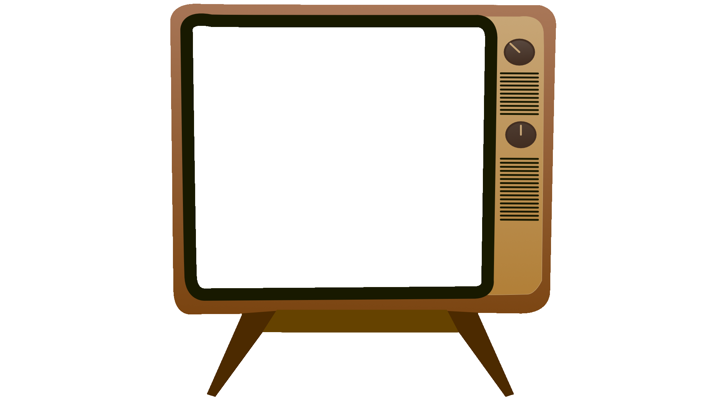
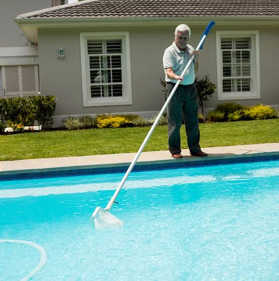
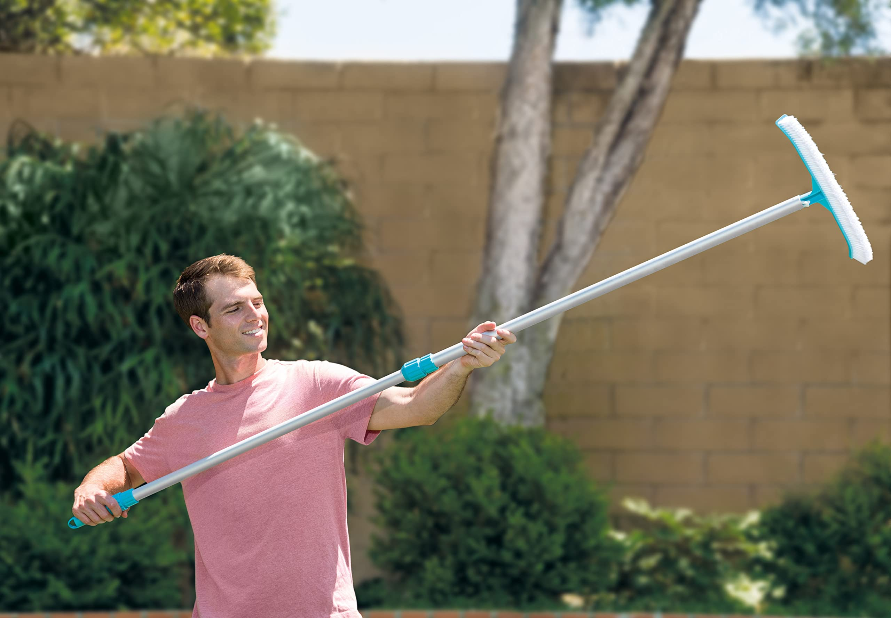
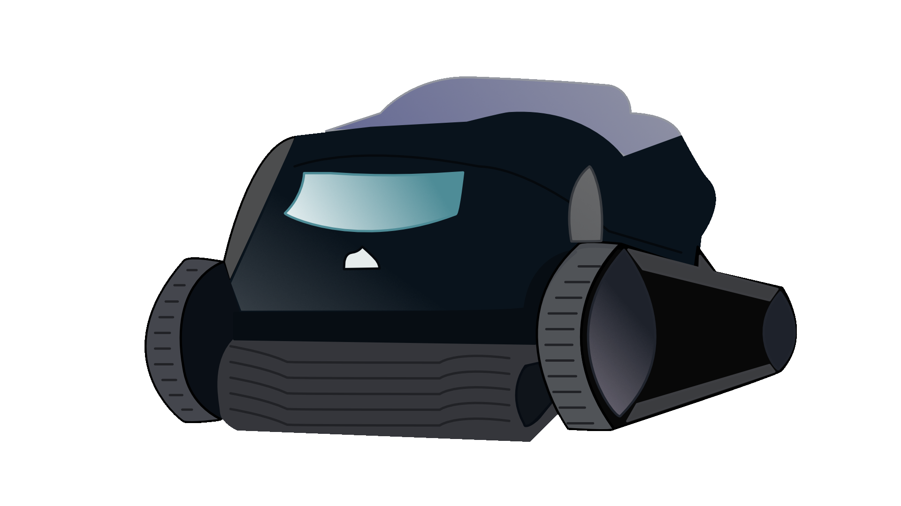
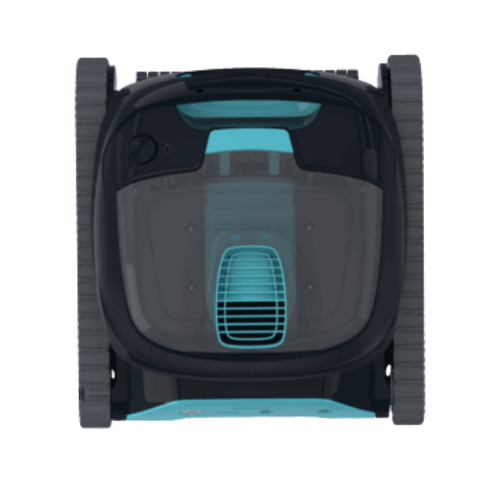
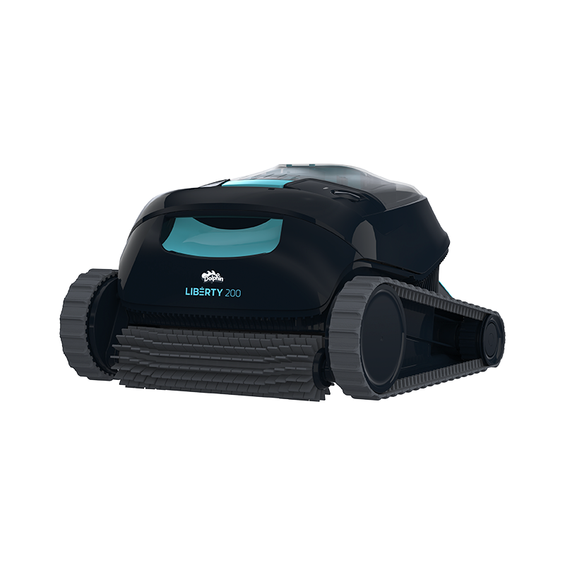
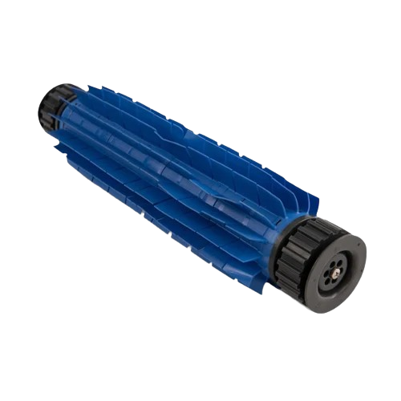
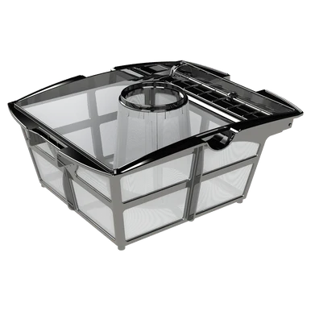
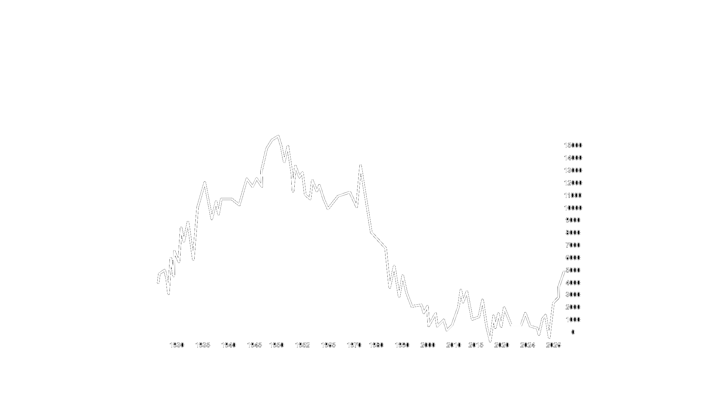
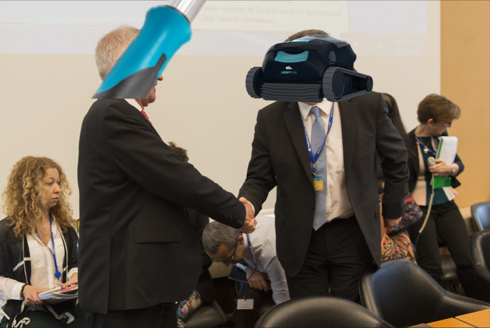

Chapitre 01 : La création du nettoyeur
Avant l'invention des robots et aspirateurs automatiques, l'entretien des piscines reposait entièrement sur le travail manuel et l'huile de coude. On retirait les débris flottants à l'aide d'épuisettes à long manche, puis on frottait les parois et le fond avec des brosses manuelles pour décoller les algues avant de siphonner les saletés par gravité avec un simple tuyau d'arrosage. Dans les cas les plus tenaces, il fallait tout simplement vider complètement le bassin pour le récurer à la main et le remplir à nouveau.
À une époque où la technologie n'avait pas encore tout automatisé, chacun était fier d'entretenir son bassin soi-même, transformant cette corvée en un rituel estival simple et gratifiant.
Personne n'imaginait alors qu'un appareil autonome pourrait un jour prendre le relais. Jusqu'à ce que des ingénieurs décident de transformer l'entretien des piscines en un processus entièrement automatique. C'est ainsi que sont nés les premiers robots nettoyeurs, capables de parcourir le fond et les parois du bassin sans la moindre intervention humaine.




Chapitre 02 : L'évolution du nettoyeur
Les débuts hydrauliques (1970-1980) : Branchés sur la filtration, ils se déplaçaient de façon aléatoire grâce à la force de la pompe pour automatiser le nettoyage de base.
L'ère électrique (1990-2000) : Dotés de moteurs autonomes et de filtres intégrés, ils s'affranchissent du système de la maison et gagnent en efficacité.
L'intelligence moderne (Aujourd'hui) : Équipés de gyroscopes, de puces de cartographie et de commandes par application mobile pour un nettoyage intelligent et sur mesure.

Chapitre 03 :
Les composantes du nettoyeur - le balai
Le rôle du balai est de décoller mécaniquement les saletés incrustées, les algues et le biofilm collés sur les parois et le fond du bassin. En tournant à l'aide de turbines internes ou de moteurs électriques, elle agit comme un balai actif qui libère les impuretés pour qu'elles puissent être immédiatement capturées par le flux d'aspiration.
Généralement fabriquée par injection plastique, la brosse ronde est constituée d'un moyeu central en polypropylène robuste sur lequel sont surmoulées des lamelles ou des poils souples en caoutchouc synthétique (comme le PVC ou le nitrile). Les ingénieurs conçoivent ces picots selon des angles hélicoïdaux précis pour optimiser l'adhérence au revêtement de la piscine et canaliser les débris vers l'orifice d'aspiration central du robot.


Chapitre 04 :
Les composantes du nettoyeur - le filtre
Le filtre agit comme le poumon du système de nettoyage. L'eau aspirée traverse les micropores du filtre (souvent de l'ordre de 20 à 100 microns), ce qui permet de retenir efficacement le sable, les poussières, les feuilles broyées et les fines particules en suspension, rejetant ainsi une eau claire et purifiée dans le bassin.
Le boîtier ou la cartouche filtrante est conçu à partir de polymères thermoplastiques renforcés pour résister à la pression constante et aux traitements chimiques de l'eau (chlore, brome). L'élément filtrant proprement dit utilise des membranes plissées en polyester ou en polypropylène non tissé. Ces plis sont espacés millimétriquement pour maximiser la surface de filtration sans restreindre le débit d'eau.

Chapitre 05 :
Les composantes du nettoyeur - le tube
Le tube connecté au filtre sert de conduit de transport étanche. Pour les nettoyeurs hydrauliques reliés à la filtration de la piscine, il achemine la saleté et l'eau pompée directement vers le système de filtration principal. Sur certains modèles, il guide également le mouvement du robot en lui permettant de se déplacer librement dans toutes les zones du bassin sans entrave.
Extrudé à partir de polyéthylène ou d'éthylène-acétate de vinyle (EVA), le tuyau flexible est conçu avec une structure annelée. Cette alternance de sections rigides et de zones souples lui confère à la fois une haute résistance à l'écrasement, une grande flexibilité pour éviter les nœuds, et une flottabilité neutre ou une résistance accrue aux UV selon qu'il s'agit d'un robot hydraulique ou électrique.
Chapitre 06 : Les problèmes
Depuis l’arrivée des nettoyeurs automatiques sur le marché, les ventes de manches télescopiques et d'épuisettes manuelles ont chuté de façon spectaculaire. Face à la rapidité et au confort de ces nouveaux robots, les consommateurs ont massivement délaissé l'équipement traditionnel, plongeant l'industrie de l'entretien manuel dans une crise sans précédent.
Devant l'ampleur de la polémique et la grogne des fabricants d'outils traditionnels, les représentants des nettoyeurs automatiques ont organisé une conférence de presse officielle pour se défendre. Ils y ont affirmé que leur invention ne visait pas à détruire un savoir-faire, mais simplement à libérer les propriétaires de piscines d'une corvée épuisante.
MAIS


Chapitre 06 : Les solutions
Pour apaiser les tensions grandissantes entre les partisans de l'entretien manuel et les défenseurs des robots, plusieurs rencontres de conseil ont été organisées des deux côtés. Ces discussions diplomatiques avaient un objectif clair : calmer le jeu et éviter une rupture totale dans l'industrie du nettoyage de piscines.
Après de longues négociations, le clan des manches télescopiques et celui des nettoyeurs automatiques ont finalement trouvé un terrain d'entente. Chacun a reconnu l'utilité de l'autre : l'automatisation pour le nettoyage quotidien du fond, et les outils manuels pour les finitions précises et les recoins difficiles d'accès.
Cette trêve semble ramener le calme autour des bassins, mais doit-on tout de même avoir peur pour la suite ? Avec des technologies toujours plus autonomes et intelligentes, l'équilibre entre l'humain et la machine reste fragile.
